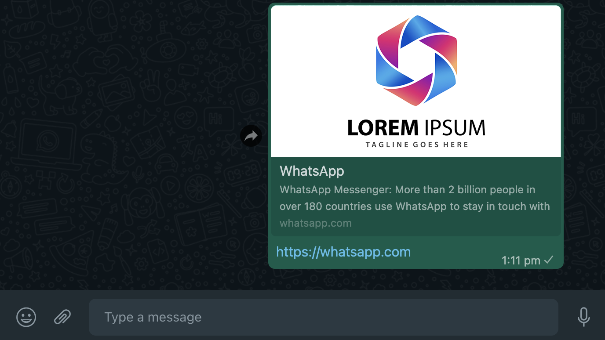
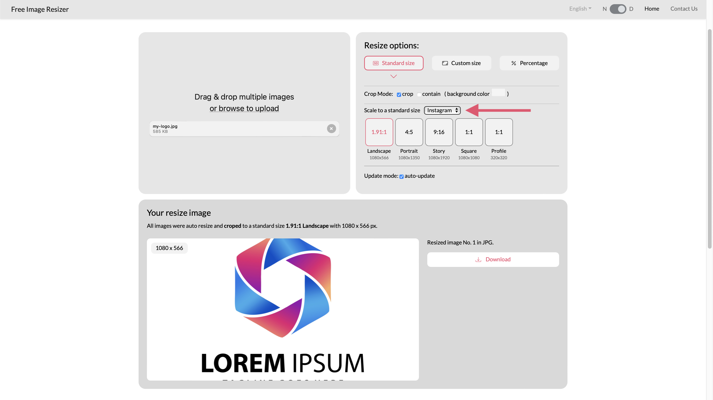
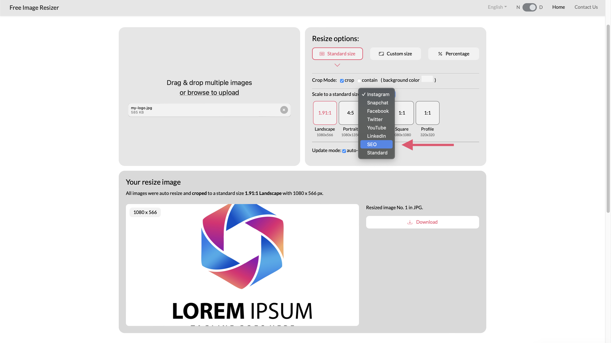
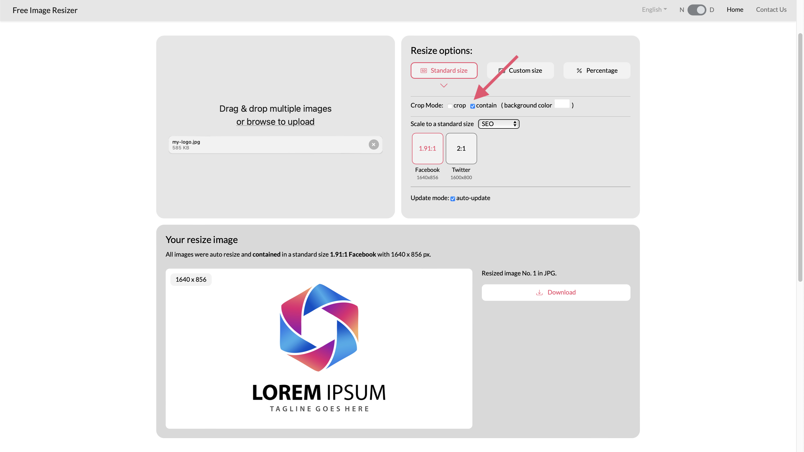
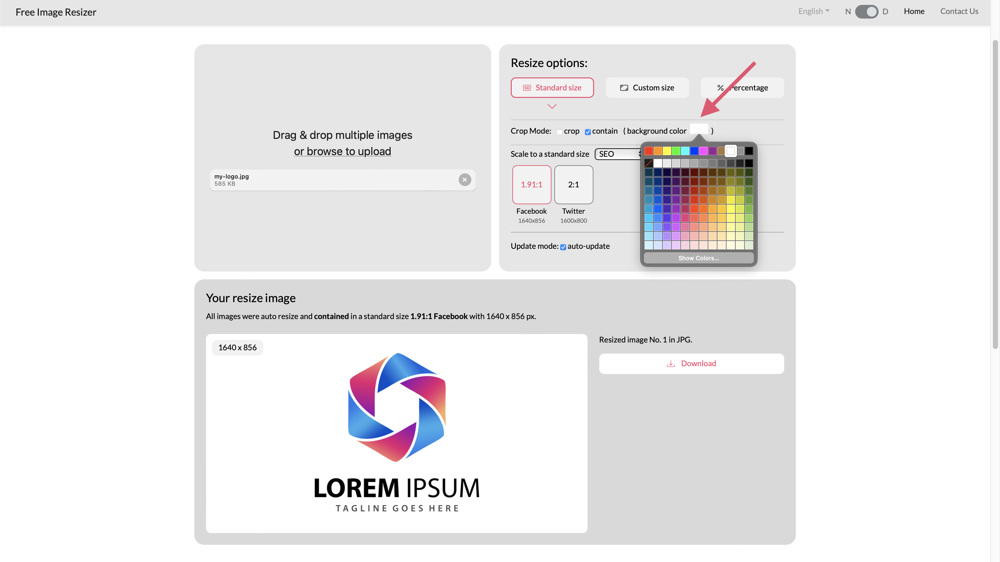
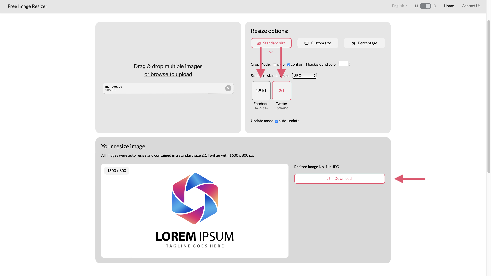
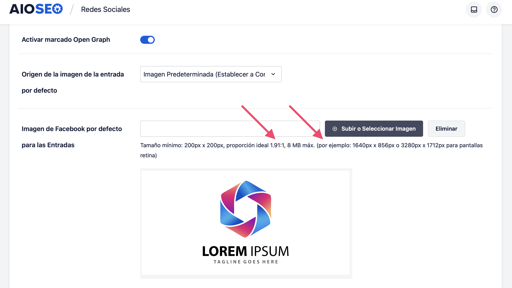

If you want to share your logo in WhatsApp and Facebook or Twitter you could free resize your image and optimize it for SEO. Here is an example of how it would look like if you do the correct configuration and resize the image to the appropiate size.
Recommended resize sizes are:
Follow the next quick steps:
Drag and drop your image to Free Image Resizer to upload and click on "Scale to a standard size".
Click on "SEO" and presets for WhatsApp (Facebook) and Twitter will appear.
Click on "Contain" if you want to ensure your logo is not cropped (optional).
Select your background color (optional).
Select the first size for Facebook and download the image, and then the second size for Twitter and download again.
Use any plugin or tool like og:tag to upload your image to your webpage. For example here we use All in One SEO free plugin for Wordpress to add the image.
You can pick other standard presets to free resize your images, including 1.91:1 Landscape, 4:5 Portrait, 4:3 Presentation, 9:16 iPhone, 3:2 Landscape, and 1:1 Square. Open Free Image Resizer from any Internet-connected browser, drag and drop your images, and pick a method and size to resize.
Go to Image Resizer → {% endblock %}